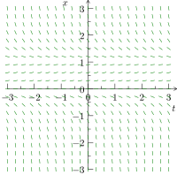

Suppose we wanted to solve the ODE \(\dv{y}{x} = x\text{.}\) Then we can do so using the tools already available to us, since the mystery function \(y=y(x)\) must have derivative given by \(x\text{.}\) So
\begin{equation*}
y = \int x\,dx = \frac{1}{2}x^{2}+C.
\end{equation*}
Any choice for \(C\) yields another solution of the ODE \(\dv{y}{x} = x\text{.}\)
1 Again, it's very important in this course not to forget the arbitrary constant \(C\text{!}\)
Now let's make things a little more interesting. Suppose we wanted to solve the ODE \(\dv{y}{x} = e^{-x^{2}}\text{.}\) Then this is impossible to do in a single "closed-form". 2 By closed-form we basically mean in terms of the usual exponential, trigonometric and polynomial functions, as well as their inverses. This is because solving this ODE requires integrating \(e^{-x^{2}}\text{,}\) which as you may remember from Calculus 2 cannot be done without resorting to something like power series. Even if we can't solve the ODE, or if we can't solve it easily, we still want to be able to obtain some information from it. One way to do this is by using direction fields, which is a graphical representation of the ODE.
To construct a direction field for an ODE of the form
To plot the direction field, remember that we're basically plotting slopes. So we first need to figure out \(y' = t-y\) at the indicated points. The following table lists values for \(y'\) at some of these points:
\((t,y)\)
\(y' = t-y\)
\((0,0)\)
\(0-0 = 0\)
\((2,2)\)
\(2-2=0\)
\((1,2)\)
\(1-2 = -1\)
\((0,1)\)
\(0-1=-1\)
If we fill out the remaining values of \(y'\) and plot the corresponding slopes, we should get something like this:
Example1.2.5Plotting a direction field with a CAS
Plot the direction field for the differential equation \(x' = x(1-x)\text{,}\) where \(x=x(t)\text{.}\)
We can easily do this with a computer system (such as Maple!). If we do so, we get the following diagram:

Figure1.2.6 The direction field for \(x' = x(1-x)\text{.}\)
Direction fields are useful because they provide a means to obtain information about a differential equation (and the corresponding model) without actually having to solve the differential equation. This is often done by drawing a solution curve through a direction field, which represents a solution of an initial value problem corresponding to the ODE the direction field is drawn from. To draw a solution curve, just pick a point in the direction field and follow along the slopes as best you can.
Example1.2.7Information from a solution curve
Let \(x(t)\) represent the solution of the initial value problem
Since we don't know how to solve this IVP yet, we'll make use of the direction field from Example 1.2.5 to find an approximate solution curve. Since the initial condition is \(x(0) = \frac{1}{2}\text{,}\) this means that the solution must pass through the point \((0,\frac{1}{2})\text{.}\) So if we start at this point and trace a curve that flows with the direction field, we get the following solution curve:
Figure1.2.8 The solution curve corresponding to the initial condition \(x(0) = \frac{1}{2}\text{.}\)
So it appears that \(\lim_{t\to\infty}x(t) = 1\text{.}\)